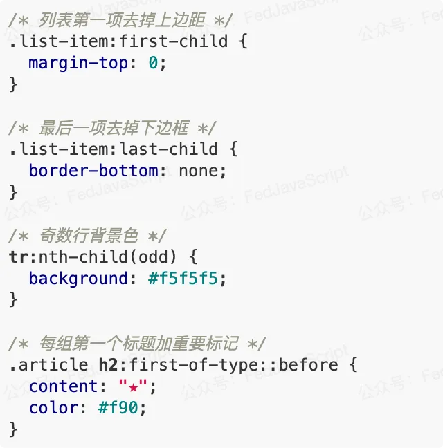
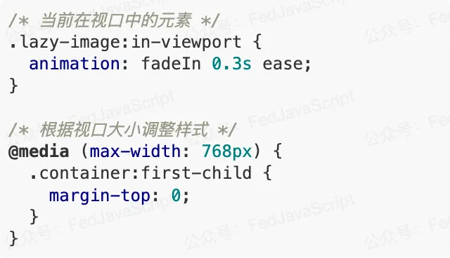

- 60 哪个 css 格式化工具是你的首选
- 59 CSS 选择器详解 12 个必知用法与最佳实践
- 58 动态视口单位之 dvh、svh、lvh
- 57 不规则造型按钮解决方案
- 56 不定宽文本溢出跑马灯效果完美解决方案
- 55 巧用 CSS 变量，实现动画函数复用
- 54 角向渐变的妙用
- 53 有趣的六芒星能力图动画
- 52 有意思的气泡 Loading 效果
- 51 CSS 原生支持的三角函数
- 50 有意思的网格下落加载效果
- 49 有意思的 Emoji 3D 表情切换效果
- 48 神奇的 3D 磨砂玻璃透视效果
- 47 抢先体验！超强大的 Anchor Positioning 锚点定位
- 46 CSS 也能实现碰撞检测
- 45 现代 CSS 解决方案 - 数学函数 Round
- 44 现代 CSS 解决方案 - 原生嵌套
- 43 神奇的背景，生化危机4日食 Loading 动画还原
- 42 当路径动画遇到滚动驱动
- 41 CSS 还原拉斯维加斯球数字动画
- 40 单标签下多色块随机文字随机颜色动画
- 39 CSS 也能实现 if 判断？实现动态高度下的不同样式展现
- 38 Flex 布局下居中溢出滚动截断问题
- 37 带圆角的虚线边框
- 36 现代 CSS 解决方案：文字颜色自动适配背景色
- 35 神奇的 3D 卡片反光闪烁动效
- 34 现代 CSS 解决方案：accent-color 强调色
- 33 巧用 has 和 drop-shadow 实现复杂布局效果
- 32 巧用 CSS + SVG 实现复杂线条光效动画
- 31 极具创意的鼠标交互动画
- 30 标准滚动条控制规范 scrollbar-color 和 scrollbar-width
- 29 类 ChatGpt 多行文本打字效果
- 28 神奇的卡片 Hover 效果与 Blur 的特性探究
- 27 渐变边框文字效果
- 26 巧妙使用多种方式实现单侧阴影
- 25 全尺寸的带圆角的渐变边框
- 24 开发中保证你用得到的 css 小技巧
- 23 您应该了解的 15 个有用的 CSS 属性
- 22 CSS 行元素的截断样式 box-decoration-break 属性
- 21 用 SASS 简化媒体查询
- 20 为什么你应该停止使用传统的 margin 和 padding 来设置 CSS 样式
- 19 sass 优化响应式布局代码
- 18 盘点 CSS 文本两端对齐的 N 种方式
- 17 如何修改滚动条的样式
- 16 CSS 模拟图片透明的棋盘背景
- 15 文本描边完美实现
- 14 你需要自定义 @property 而不是 CSS 变量的情况
- 13 从高度 0 过渡到自动高度
- 12 一些 css 语法解释
- 11 scss 日常用法
- 10 sass 指南
- 09 CSS 颜色设置透明度的新姿势
- 08 CSS 属性 appearance
- 07 CSS 动画性能优化
- 06 CSS 功能特性
- 05 CSS 中的 var() 函数
- 04 15 个你不知道的 CSS 属性
- 03 will-change
- 02 normalize.css 清除元素默认样式
- 01 纯 CSS 获取屏幕宽高
CSS 选择器详解 12 个必知用法与最佳实践
HaoTian · 2024-12-29 16:07:08
1. 属性选择器 - 不用写 class 也能精准定位
还记得在项目里到处写 class 的日子吗？使用属性选择器，很多时候我们甚至不需要额外添加类名就能定位到目标元素。

这样写不仅代码更简洁，而且维护起来也更轻松。不用担心类名冲突，也不用记那么多命名规范。
2. 结构伪类选择器 - 智能识别元素位置
还在为第一个元素和最后一个元素写特殊类名吗？结构伪类选择器帮你省去这个烦恼：
这些选择器就像一个智能助手，自动识别元素的位置并应用相应样式，再也不用手动标记了。
3. 组合选择器 - 处理元素间的微妙关系
元素之间的关系很复杂，组合选择器就是处理这些关系的最佳工具：
4. 状态伪类选择器 - 让交互更生动
用户交互是前端的重中之重，状态伪类选择器能让交互效果更细腻：
5. 否定伪类选择器 - 排除特例
有时候我们需要选择"除了某些元素之外"的所有元素，否定伪类就是为这种场景而生：
6. 空状态伪类 - 优雅处理空内容
空内容是不可避免的，使用:empty 伪类可以优雅处理：
7. 目标伪类选择器 - 页面内导航利器
当 URL 带有锚点时,我们可以用:target 突出显示目标元素:
8. 语言伪类选择器 - 多语言网站必备
针对不同语言内容设置不同样式,完美支持多语言网站:
9. 动态伪类选择器 - 链接状态控制
不只是hover,还有更多控制链接状态的选择器:
10. 表单相关伪类 - 完美控制表单状态
表单元素有着丰富的状态,这些选择器让我们能精确控制它们:
11. 用户行为伪类 - 提升交互体验
根据用户行为动态改变样式:
12. 视图相关伪类 - 优化可见性
处理元素在视口中的状态:
